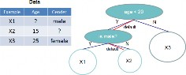
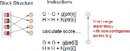
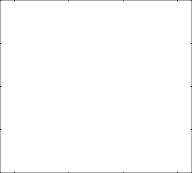

Tianqi Chen
University of Washington
Carlos Guestrin
University of Washington
Tree boosting is a highly effective and widely used machine learning method. In this paper, we describe a scalable end- to-end tree boosting system called XGBoost, which is used widely by data scientists to achieve state-of-the-art results on many machine learning challenges. We propose a novel sparsity-aware algorithm for sparse data and weighted quan- tile sketch for approximate tree learning. More importantly, we provide insights on cache access patterns, data compres- sion and sharding to build a scalable tree boosting system. By combining these insights, XGBoost scales beyond billions of examples using far fewer resources than existing systems.
Large-scale Machine Learning
Machine learning and data-driven approaches are becom- ing very important in many areas. Smart spam classifiers protect our email by learning from massive amounts of s- pam data and user feedback; advertising systems learn to match the right ads with the right context; fraud detection systems protect banks from malicious attackers; anomaly event detection systems help experimental physicists to find events that lead to new physics. There are two importan- t factors that drive these successful applications: usage of effective (statistical) models that capture the complex data dependencies and scalable learning systems that learn the model of interest from large datasets.
Among the machine learning methods used in practice, gradient tree boosting [10]1 is one technique that shines in many applications. Tree boosting has been shown to give state-of-the-art results on many standard classification benchmarks [16]. LambdaMART [5], a variant of tree boost- ing for ranking, achieves state-of-the-art result for ranking

1Gradient tree boosting is also known as gradient boosting machine (GBM) or gradient boosted regression tree (GBRT)
KDD ’16, August 13-17, 2016, San Francisco, CA, USA
c 2016 ACM. ISBN 978-1-4503-4232-2/16/08. . . $15.00
DOI: http://dx.doi.org/10.1145/2939672.2939785
problems. Besides being used as a stand-alone predictor, it is also incorporated into real-world production pipelines for ad click through rate prediction [15]. Finally, it is the de- facto choice of ensemble method and is used in challenges such as the Netflix prize [3].
In this paper, we describe XGBoost, a scalable machine learning system for tree boosting. The system is available as an open source package2. The impact of the system has been widely recognized in a number of machine learning and data mining challenges. Take the challenges hosted by the machine learning competition site Kaggle for example. A- mong the 29 challenge winning solutions 3 published at Kag- gle’s blog during 2015, 17 solutions used XGBoost. Among these solutions, eight solely used XGBoost to train the mod- el, while most others combined XGBoost with neural net- s in ensembles. For comparison, the second most popular method, deep neural nets, was used in 11 solutions. The success of the system was also witnessed in KDDCup 2015, where XGBoost was used by every winning team in the top-
These results demonstrate that our system gives state-of- the-art results on a wide range of problems. Examples of the problems in these winning solutions include: store sales prediction; high energy physics event classification; web text classification; customer behavior prediction; motion detec- tion; ad click through rate prediction; malware classification; product categorization; hazard risk prediction; massive on- line course dropout rate prediction. While domain depen- dent data analysis and feature engineering play an important role in these solutions, the fact that XGBoost is the consen- sus choice of learner shows the impact and importance of our system and tree boosting.
The most important factor behind the success of XGBoost is its scalability in all scenarios. The system runs more than ten times faster than existing popular solutions on a single machine and scales to billions of examples in distributed or memory-limited settings. The scalability of XGBoost is due to several important systems and algorithmic optimizations. These innovations include: a novel tree learning algorithm is for handling sparse data; a theoretically justified weighted quantile sketch procedure enables handling instance weights in approximate tree learning. Parallel and distributed com- puting makes learning faster which enables quicker model ex- ploration. More importantly, XGBoost exploits out-of-core

2https://github.com/dmlc/xgboost
3Solutions come from of top-3 teams of each competitions.
computation and enables data scientists to process hundred millions of examples on a desktop. Finally, it is even more exciting to combine these techniques to make an end-to-end system that scales to even larger data with the least amount of cluster resources. The major contributions of this paper is listed as follows:
•
We design and build a highly scalable end-to-end tree boosting system.
•
We propose a theoretically justified weighted quantile sketch for efficient proposal calculation.
•
We introduce a novel sparsity-aware algorithm for par- allel tree learning.
•
We propose an effective cache-aware block structure for out-of-core tree learning.
While there are some existing works on parallel tree boost- ing [22, 23, 19], the directions such as out-of-core compu- tation, cache-aware and sparsity-aware learning have not been explored. More importantly, an end-to-end system that combines all of these aspects gives a novel solution for real-world use-cases. This enables data scientists as well as researchers to build powerful variants of tree boosting al- gorithms [7, 8]. Besides these major contributions, we also make additional improvements in proposing a regularized learning objective, which we will include for completeness.
The remainder of the paper is organized as follows. We will first review tree boosting and introduce a regularized objective in Sec. 2. We then describe the split finding meth- ods in Sec. 3 as well as the system design in Sec. 4, including experimental results when relevant to provide quantitative support for each optimization we describe. Related work is discussed in Sec. 5. Detailed end-to-end evaluations are included in Sec. 6. Finally we conclude the paper in Sec. 7.
We review gradient tree boosting algorithms in this sec- tion. The derivation follows from the same idea in existing literatures in gradient boosting. Specicially the second order method is originated from Friedman et al. [12]. We make mi- nor improvements in the reguralized objective, which were found helpful in practice.
For a given data set with n examples and m features
m
it into the leaves and calculate the final prediction by sum- ming up the score in the corresponding leaves (given by w). To learn the set of functions used in the model, we minimize the following regularized objective.
L(φ) = l(yˆi, yi) + Ω(fk)
i k (2)
2
where Ω(f ) = γT + 1 λ w 2
Here l is a differentiable convex loss function that measures the difference between the prediction yˆi and the target yi. The second term Ω penalizes the complexity of the model (i.e., the regression tree functions). The additional regular- ization term helps to smooth the final learnt weights to avoid over-fitting. Intuitively, the regularized objective will tend to select a model employing simple and predictive functions. A similar regularization technique has been used in Regu- larized greedy forest (RGF) [25] model. Our objective and the corresponding learning algorithm is simpler than RGF and easier to parallelize. When the regularization parame- ter is set to zero, the objective falls back to the traditional gradient tree boosting.
i
The tree ensemble model in Eq. (2) includes functions as parameters and cannot be optimized using traditional opti- mization methods in Euclidean space. Instead, the model is trained in an additive manner. Formally, let yˆ(t) be the prediction of the i-th instance at the t-th iteration, we will
need to add ft to minimize the following objective.
n
L(t) = l(yi, yˆi(t−1) + ft(xi)) + Ω(ft)
i=1
D = {(xi, yi)} (|D| = n, xi ∈ R , yi ∈ R), a tree ensem-
This means we greedily add the f that most improves our
ble model (shown in Fig. 1) uses K additive functions to
predict the output.
K
yˆi = φ(xi) = fk(xi), fk ∈ F, (1)
k=1
F { } → ∈
t
model according to Eq. (2). Second-order approximation can be used to quickly optimize the objective in the general setting [12].
n
L(t) [l(y , yˆ(t−1)) + g f (x ) + 1 h f 2(x )] + Ω(f )
where = f (x) = wq(x) (q : Rm T, w RT ) is the
space of regression trees (also known as CART). Here q rep-
i
i=1
i t i
2 i t i t
resents the structure of each tree that maps an example to
the corresponding leaf index. T is the number of leaves in the
will use the decision rules in the trees (given by q) to classify
tree. Each fk corresponds to an independent tree structure q and leaf weights w. Unlike decision trees, each regression tree contains a continuous score on each of the leaf, we use wi to represent score on i-th leaf. For a given example, we
where gi = ∂ (t−1) l(yi, yˆ(t−1)) and hi = ∂2(t− l(yi, yˆ )
yˆ
yˆ
1)
(t−1)
are first and second order gradient statistics on the loss func-
tion. We can remove the constant terms to obtain the fol- lowing simplified objective at step t.
n
i t
i
2
i t
i
t
L˜(t) = [g f (x ) + 1 h f 2(x )] + Ω(f ) (3)
i=1

Input: I, instance set of current node
Input: d, feature dimension
gain ← 0
G ←
i∈I gi, H ←
i∈I hi
for k = 1 to m do
← ←
GL 0, HL 0
for j in sorted(I, by xjk) do
GL ← GL + gj, HL ← HL + hj GR ← G − GL, HR ← H − HL
G2 G2 G2
score ← max(score, L + R − )
HL+λ
HR+λ
H+λ
{ | }
Define Ij = i q(xi) = j as the instance set of leaf j. We can rewrite Eq (3) by expanding Ω as follows

n T
i t
i
2
i t
i
2
j
L˜(t) = [g f (x ) + 1 h f 2(x )] + γT + 1 λ w2
Algorithm 2: Approximate Algorithm for Split Finding
for k = 1 to m do
i=1
j
T
j=1
(4)
Propose Sk
= {sk1
, sk2
, · · · skl
} by percentiles on feature k.
= [( gi)wj
j=1 i∈Ij
+ 1 ( h
2 i
i∈Ij
+ λ)w2] + γT
Proposal can be done per tree (global), or per split(local).
for k = 1 to m do

For a fixed structure q(x), we can compute the optimal
Gkv ←= j∈{j|sk,v ≥xjk >sk,v−1 } gj
weight wj∗ of leaf j by
j
hi + λ
w∗ = − i∈Ij gi , (5)
i∈Ij
Hkv ←=
j∈{j|sk,v ≥xjk >sk,v−1 } hj
Follow same step as in previous section to find max
score only among proposed splits.

and calculate the corresponding optimal value by
13], It is implemented in a commercial software TreeNet 4
˜(t)
1 (
i∈Ij gi)
for gradient boosting, but is not implemented in existing
L (q) = − 2
j=1
i∈Ij
+ γT. (6)
hi + λ
opensource packages. According to user feedback, using col- umn sub-sampling prevents over-fitting even more so than
Eq (6) can be used as a scoring function to measure the
quality of a tree structure q. This score is like the impurity score for evaluating decision trees, except that it is derived for a wider range of objective functions. Fig. 2 illustrates how this score can be calculated.
∪
Normally it is impossible to enumerate all the possible tree structures q. A greedy algorithm that starts from a single leaf and iteratively adds branches to the tree is used instead. Assume that IL and IR are the instance sets of left and right nodes after the split. Lettting I = IL IR, then the loss reduction after the split is given by
the traditional row sub-sampling (which is also supported). The usage of column sub-samples also speeds up computa- tions of the parallel algorithm described later.
−
One of the key problems in tree learning is to find the best split as indicated by Eq (7). In order to do so, a s- plit finding algorithm enumerates over all the possible splits on all the features. We call this the exact greedy algorithm.
1 (
i∈IL
gi)2
( i∈IR
gi)2
( i∈I
gi)2
Most existing single machine tree boosting implementation-

Lsplit = 2
i∈IL hi
+ λ +
i∈IR hi
+ λ −
γ

i∈I hi + λ
s, such as scikit-learn [20], R’s gbm [21] as well as the single machine version of XGBoost support the exact greedy algo-
(7)
This formula is usually used in practice for evaluating the split candidates.
Besides the regularized objective mentioned in Sec. 2.1, two additional techniques are used to further prevent over- fitting. The first technique is shrinkage introduced by Fried- man [11]. Shrinkage scales newly added weights by a factor η after each step of tree boosting. Similar to a learning rate in tochastic optimization, shrinkage reduces the influence of each individual tree and leaves space for future trees to im-
rithm. The exact greedy algorithm is shown in Alg. 1. It is computationally demanding to enumerate all the possible splits for continuous features. In order to do so efficiently, the algorithm must first sort the data according to feature values and visit the data in sorted order to accumulate the gradient statistics for the structure score in Eq (7).
The exact greedy algorithm is very powerful since it enu- merates over all possible splitting points greedily. However, it is impossible to efficiently do so when the data does not fit entirely into memory. Same problem also arises in the dis-
prove the model. The second technique is column (feature)
subsampling. This technique is used in RandomForest [4,
4https://www.salford-systems.com/products/treenet
exact greedy
global eps=0.3 local eps=0.3
global eps=0.05
0.83
0.82
0.81
Test AUC
0.80
0.79
0.78
0.77
0.76
0.75
0 10 20 30 40 50 60 70 80 90
Number of Iterations

D { · · · }
ta. Formally, let multi-set k = (x1k, h1), (x2k, h2) (xnk, hn) represent the k-th feature values and second order gradient statistics of each training instances. We can define a rank functions rk : R → [0, +∞) as
rk(z) =
1
(x,h)∈Dk h
(x,h)∈ Dk ,x<z
h, (8)
tributed setting. To support effective gradient tree boosting in these two settings, an approximate algorithm is needed.
We summarize an approximate framework, which resem- bles the ideas proposed in past literatures [17, 2, 22], in Alg. 2. To summarize, the algorithm first proposes candi- date splitting points according to percentiles of feature dis- tribution (a specific criteria will be given in Sec. 3.3). The algorithm then maps the continuous features into bucket- s split by these candidate points, aggregates the statistics and finds the best solution among proposals based on the aggregated statistics.
There are two variants of the algorithm, depending on
when the proposal is given. The global variant proposes all the candidate splits during the initial phase of tree construc- tion, and uses the same proposals for split finding at all level-
s. The local variant re-proposes after each split. The global method requires less proposal steps than the local method. However, usually more candidate points are needed for the global proposal because candidates are not refined after each split. The local proposal refines the candidates after splits, and can potentially be more appropriate for deeper trees. A comparison of different algorithms on a Higgs boson dataset is given by Fig. 3. We find that the local proposal indeed requires fewer candidates. The global proposal can be as accurate as the local one given enough candidates.
Most existing approximate algorithms for distributed tree learning also follow this framework. Notably, it is also possi- ble to directly construct approximate histograms of gradient statistics [22]. It is also possible to use other variants of bin- ning strategies instead of quantile [17]. Quantile strategy benefit from being distributable and recomputable, which we will detail in next subsection. From Fig. 3, we also find that the quantile strategy can get the same accuracy as exact greedy given reasonable approximation level.
Our system efficiently supports exact greedy for the single machine setting, as well as approximate algorithm with both local and global proposal methods for all settings. Users can freely choose between the methods according to their needs.
One important step in the approximate algorithm is to propose candidate split points. Usually percentiles of a fea- ture are used to make candidates distribute evenly on the da-
which represents the proportion of instances whose feature
value k is smaller than z. The goal is to find candidate split points {sk1, sk2, · · · skl}, such that
i i
|rk(sk,j) − rk(sk,j+1)| < E, sk1 = min xik, skl = max xik.
(9)
Here E is an approximation factor. Intuitively, this means that there is roughly 1/E candidate points. Here each data point is weighted by hi. To see why hi represents the weight, we can rewrite Eq (3) as
n
2
i
t
i
i
i
t
1 h (f (x ) − g /h )2 + Ω(f ) + constant,
i=1
which is exactly weighted squared loss with labels gi/hi and weights hi. For large datasets, it is non-trivial to find can- didate splits that satisfy the criteria. When every instance has equal weights, an existing algorithm called quantile s- ketch [14, 24] solves the problem. However, there is no existing quantile sketch for the weighted datasets. There- fore, most existing approximate algorithms either resorted to sorting on a random subset of data which have a chance of failure or heuristics that do not have theoretical guarantee. To solve this problem, we introduced a novel distributed weighted quantile sketch algorithm that can handle weighted data with a provable theoretical guarantee. The general idea is to propose a data structure that supports merge and prune operations, with each operation proven to maintain a certain accuracy level. A detailed description of the algorithm as well as proofs are given in the supplementary material5(link
in the footnote).
In many real-world problems, it is quite common for the input x to be sparse. There are multiple possible causes for sparsity: 1) presence of missing values in the data; 2) frequent zero entries in the statistics; and, 3) artifacts of feature engineering such as one-hot encoding. It is impor- tant to make the algorithm aware of the sparsity pattern in the data. In order to do so, we propose to add a default direction in each tree node, which is shown in Fig. 4. When a value is missing in the sparse matrix x, the instance is
5Link to the supplementary material
http://homes.cs.washington.edu/˜tqchen/pdf/xgboost-supp.pdf


{ ∈ | / }
Input: I, instance set of current node Input: Ik = i I xik = missing Input: d, feature dimension
Also applies to the approximate setting, only collect statistics of non-missing entries into buckets
gain ← 0
G ←
i∈I, gi,H ←
i∈I hi
32


Basic algorithm


Sparsity aware algorithm


16
8
Time per Tree(sec)
4
2
1
0.5


0.25
0.125


for k = 1 to m do
// enumerate missing value goto right
GL ← 0, HL ← 0
0.0625
0.03125


1 2 4 8 16
Number of Threads
for j in sorted(Ik, ascent order by xjk) do

GL ← GL + gj, HL ← HL + hj
GR ← G − GL, HR ← H − HL 2
G2 G G2

score ← max(score, L + R − )
HL+λ
HR+λ
H+λ
// enumerate missing value goto left
← ←
GR 0, HR 0
for j in sorted(Ik, descent order by xjk) do

GR ← GR + gj, HR ← HR + hj
GL ← G − GR, HL ← H − HR 2
The most time consuming part of tree learning is to get
G2 G G2
score ← max(score, L + R − )
the data into sorted order. In order to reduce the cost of
HL+λ
HR+λ
H+λ
sorting, we propose to store the data in in-memory units,
which we called block. Data in each block is stored in the
classified into the default direction. There are two choices of default direction in each branch. The optimal default di- rections are learnt from the data. The algorithm is shown in Alg. 3. The key improvement is to only visit the non-missing entries Ik. The presented algorithm treats the non-presence as a missing value and learns the best direction to handle missing values. The same algorithm can also be applied when the non-presence corresponds to a user specified value by limiting the enumeration only to consistent solutions.
To the best of our knowledge, most existing tree learning algorithms are either only optimized for dense data, or need specific procedures to handle limited cases such as categor- ical encoding. XGBoost handles all sparsity patterns in a unified way. More importantly, our method exploits the s- parsity to make computation complexity linear to number of non-missing entries in the input. Fig. 5 shows the com- parison of sparsity aware and a naive implementation on an Allstate-10K dataset (description of dataset given in Sec. 6). We find that the sparsity aware algorithm runs 50 times faster than the naive version. This confirms the importance of the sparsity aware algorithm.
compressed column (CSC) format, with each column sorted by the corresponding feature value. This input data layout only needs to be computed once before training, and can be reused in later iterations.
In the exact greedy algorithm, we store the entire dataset in a single block and run the split search algorithm by lin- early scanning over the pre-sorted entries. We do the split finding of all leaves collectively, so one scan over the block will collect the statistics of the split candidates in all leaf branches. Fig. 6 shows how we transform a dataset into the format and find the optimal split using the block structure. The block structure also helps when using the approxi- mate algorithms. Multiple blocks can be used in this case,
with each block corresponding to subset of rows in the dataset. Different blocks can be distributed across machines, or s- tored on disk in the out-of-core setting. Using the sorted structure, the quantile finding step becomes a linear scan over the sorted columns. This is especially valuable for lo- cal proposal algorithms, where candidates are generated fre- quently at each branch. The binary search in histogram ag- gregation also becomes a linear time merge style algorithm.
Collecting statistics for each column can be parallelized, giving us a parallel algorithm for split finding. Importantly, the column block structure also supports column subsam- pling, as it is easy to select a subset of columns in a block.
Basic algorithm
Cache-aware algorithm
Basic algorithm
Cache-aware algorithm
Basic algorithm
Cache-aware algorithm
Basic algorithm
Cache-aware algorithm
128 256 8 8
128 4 4
Time per Tree(sec)
Time per Tree(sec)
Time per Tree(sec)
Time per Tree(sec)
64
64 2 2
32
32 1 1
16
16 0.5
0.5
8 1 2 4 8 16
Number of Threads
Allstate 10M
8 1 2 4 8 16
Number of Threads
Higgs 10M
0.25
1 2 4 8 16
Number of Threads
Allstate 1M
0.25
1 2 4 8 16
Number of Threads
Higgs 1M

block size=2^12 block size=2^16
block size=2^20 block size=2^24
128
64
Time per Tree(sec)
32
Time Complexity Analysis Let d be the maximum depth of the tree and K be total number of trees. For the exac- t greedy algorithm, the time complexity of original spase aware algorithm is O(Kd x 0 log n). Here we use x 0 to denote number of non-missing entries in the training data. On the other hand, tree boosting on the block structure on- ly cost O(Kd x 0 + x 0 log n). Here O( x 0 log n) is the one time preprocessing cost that can be amortized. This analysis shows that the block structure helps to save an ad- ditional log n factor, which is significant when n is large. For the approximate algorithm, the time complexity of original algorithm with binary search is O(Kd x 0 log q). Here q is the number of proposal candidates in the dataset. While q is usually between 32 and 100, the log factor still introduces overhead. Using the block structure, we can reduce the time to O(Kd x 0 + x 0 log B), where B is the maximum num- ber of rows in each block. Again we can save the additional
4
512
256
Time per Tree(sec)
128
64
32
16
8
4
1 2 4 8 16
Number of Threads
block size=2^16
block size=2^20
block size=2^24
block size=2^12
Allstate 10M
1 2 4 8 16
Number of Threads
Higgs 10M
log q factor in computation.
While the proposed block structure helps optimize the computation complexity of split finding, the new algorithm requires indirect fetches of gradient statistics by row index, since these values are accessed in order of feature. This is a non-continuous memory access. A naive implementation of split enumeration introduces immediate read/write de- pendency between the accumulation and the non-continuous memory fetch operation (see Fig. 8). This slows down split finding when the gradient statistics do not fit into CPU cache and cache miss occur.
non cache-aware algorithm on the the Higgs and the All- state dataset. We find that cache-aware implementation of the exact greedy algorithm runs twice as fast as the naive version when the dataset is large.
System | exact greedy | approximate global | approximate local | out-of-core | sparsity aware | parallel |
XGBoost | yes | yes | yes | yes | yes | yes |
pGBRT | no | no | yes | no | no | yes |
Spark MLLib | no | yes | no | no | partially | yes |
H2O | no | yes | no | no | partially | yes |
scikit-learn | yes | no | no | no | no | no |
R GBM | yes | no | no | no | partially | no |
shows that choosing 216 examples per block balances the cache property and parallelization.
One goal of our system is to fully utilize a machine’s re- sources to achieve scalable learning. Besides processors and memory, it is important to utilize disk space to handle data that does not fit into main memory. To enable out-of-core computation, we divide the data into multiple blocks and store each block on disk. During computation, it is impor- tant to use an independent thread to pre-fetch the block into a main memory buffer, so computation can happen in con- currence with disk reading. However, this does not entirely solve the problem since the disk reading takes most of the computation time. It is important to reduce the overhead and increase the throughput of disk IO. We mainly use two techniques to improve the out-of-core computation.
Our system implements gradient boosting [10], which per- forms additive optimization in functional space. Gradient tree boosting has been successfully used in classification [12], learning to rank [5], structured prediction [8] as well as other fields. XGBoost incorporates a regularized model to prevent overfitting. This this resembles previous work on regularized greedy forest [25], but simplifies the objective and algorithm for parallelization. Column sampling is a simple but effective technique borrowed from RandomForest [4]. While sparsity- aware learning is essential in other types of models such as
There are several existing works on parallelizing tree learn- ing [22, 19]. Most of these algorithms fall into the approxi- mate framework described in this paper. Notably, it is also possible to partition data by columns [23] and apply the ex- act greedy algorithm. This is also supported in our frame- work, and the techniques such as cache-aware pre-fecthing can be used to benefit this type of algorithm. While most existing works focus on the algorithmic aspect of paralleliza- tion, our work improves in two unexplored system direction- s: out-of-core computation and cache-aware learning. This gives us insights on how the system and the algorithm can be jointly optimized and provides an end-to-end system that can handle large scale problems with very limited computing resources. We also summarize the comparison between our system and existing opensource implementations in Table 1. Quantile summary (without weights) is a classical prob- lem in the database community [14, 24]. However, the ap- proximate tree boosting algorithm reveals a more general problem – finding quantiles on weighted data. To the best of our knowledge, the weighted quantile sketch proposed in this paper is the first method to solve this problem. The weighted quantile summary is also not specific to the tree learning and can benefit other applications in data science
and machine learning in the future.
We implemented XGBoost as an open source package6. The package is portable and reusable. It supports various weighted classification and rank objective functions, as well as user defined objective function. It is available in popular languages such as python, R, Julia and integrates naturally with language native data science pipelines such as scikit- learn. The distributed version is built on top of the rabit library7 for allreduce. The portability of XGBoost makes it available in many ecosystems, instead of only being tied to a specific platform. The distributed XGBoost runs natively on Hadoop, MPI Sun Grid engine. Recently, we also enable distributed XGBoost on jvm bigdata stacks such as Flink and Spark. The distributed version has also been integrated into cloud platform Tianchi8 of Alibaba. We believe that there will be more integrations in the future.
We used four datasets in our experiments. A summary of these datasets is given in Table 2. In some of the experi-
linear models [9], few works on tree learning have considered
this topic in a principled way. The algorithm proposed in this paper is the first unified approach to handle all kinds of sparsity patterns.
6https://github.com/dmlc/xgboost 7https://github.com/dmlc/rabit 8https://tianchi.aliyun.com
Dataset | n | m | Task |
Allstate | 10 M | 4227 | Insurance claim classification |
Higgs Boson | 10 M | 28 | Event classification |
Yahoo LTRC | 473K | 700 | Learning to Rank |
Criteo | 1.7 B | 67 | Click through rate prediction |
Method | Time per Tree (sec) | Test AUC |
XGBoost | 0.6841 | 0.8304 |
XGBoost (colsample=0.5) | 0.6401 | 0.8245 |
scikit-learn | 28.51 | 0.8302 |
R.gbm | 1.032 | 0.6224 |
ments, we use a randomly selected subset of the data either due to slow baselines or to demonstrate the performance of the algorithm with varying dataset size. We use a suffix to denote the size in these cases. For example Allstate-10K means a subset of the Allstate dataset with 10K instances. The first dataset we use is the Allstate insurance claim dataset9. The task is to predict the likelihood and cost of an insurance claim given different risk factors. In the exper- iment, we simplified the task to only predict the likelihood of an insurance claim. This dataset is used to evaluate the impact of sparsity-aware algorithm in Sec. 3.4. Most of the sparse features in this data come from one-hot encoding. We randomly select 10M instances as training set and use the
32
Time per Tree(sec)
16
8
4
2
1
0.5
pGBRT
XGBoost
1 2 4 8 16
Number of Threads
rest as evaluation set.
The second dataset is the Higgs boson dataset10 from high energy physics. The data was produced using Monte Carlo simulations of physics events. It contains 21 kinematic prop- erties measured by the particle detectors in the accelerator. It also contains seven additional derived physics quantities of the particles. The task is to classify whether an event corresponds to the Higgs boson. We randomly select 10M instances as training set and use the rest as evaluation set. The third dataset is the Yahoo! learning to rank challenge dataset [6], which is one of the most commonly used bench- marks in learning to rank algorithms. The dataset contains 20K web search queries, with each query corresponding to a list of around 22 documents. The task is to rank the docu- ments according to relevance of the query. We use the official
train test split in our experiment.
The last dataset is the criteo terabyte click log dataset11. We use this dataset to evaluate the scaling property of the system in the out-of-core and the distributed settings. The data contains 13 integer features and 26 ID features of user, item and advertiser information. Since a tree based model is better at handling continuous features, we preprocess the data by calculating the statistics of average CTR and count of ID features on the first ten days, replacing the ID fea- tures by the corresponding count statistics during the next ten days for training. The training set after preprocessing contains 1.7 billion instances with 67 features (13 integer, 26 average CTR statistics and 26 counts). The entire dataset is more than one terabyte in LibSVM format.
We use the first three datasets for the single machine par- allel setting, and the last dataset for the distributed and out-of-core settings. All the single machine experiments are conducted on a Dell PowerEdge R420 with two eight-core Intel Xeon (E5-2470) (2.3GHz) and 64GB of memory. If not specified, all the experiments are run using all the available cores in the machine. The machine settings of the distribut- ed and the out-of-core experiments will be described in the
9https://www.kaggle.com/c/ClaimPredictionChallenge 10https://archive.ics.uci.edu/ml/datasets/HIGGS 11http://labs.criteo.com/downloads/download-terabyte-
click-logs/
Method | Time per Tree (sec) | NDCG@10 |
XGBoost | 0.826 | 0.7892 |
XGBoost (colsample=0.5) | 0.506 | 0.7913 |
pGBRT [22] | 2.576 | 0.7915 |
corresponding section. In all the experiments, we boost trees with a common setting of maximum depth equals 8, shrink- age equals 0.1 and no column subsampling unless explicitly specified. We can find similar results when we use other settings of maximum depth.
In this section, we evaluate the performance of XGBoost on a single machine using the exact greedy algorithm on Higgs-1M data, by comparing it against two other common- ly used exact greedy tree boosting implementations. Since scikit-learn only handles non-sparse input, we choose the dense Higgs dataset for a fair comparison. We use the 1M subset to make scikit-learn finish running in reasonable time. Among the methods in comparison, R’s GBM uses a greedy approach that only expands one branch of a tree, which makes it faster but can result in lower accuracy, while both scikit-learn and XGBoost learn a full tree. The results are shown in Table 3. Both XGBoost and scikit-learn give bet- ter performance than R’s GBM, while XGBoost runs more than 10x faster than scikit-learn. In this experiment, we al- so find column subsamples gives slightly worse performance than using all the features. This could due to the fact that there are few important features in this dataset and we can benefit from greedily select from all the features.
We next evaluate the performance of XGBoost on the learning to rank problem. We compare against pGBRT [22], the best previously pubished system on this task. XGBoost
Block compression
Basic algorithm
Compression+shard
Out of system file cache start from this point
4096
2048
Time per Tree(sec)
1024
32768


H2O


Spark MLLib


XGBoost


16384
Total Running Time (sec)
8192
4096


2048
512
256
121828 256
512 1024 2048
1024
512


256
121828 256 512 1024 2048
Number of Training Examples (million)
Number of Training Examples (million)
runs exact greedy algorithm, while pGBRT only support an approximate algorithm. The results are shown in Table 4 and Fig. 10. We find that XGBoost runs faster. Interest- ingly, subsampling columns not only reduces running time, and but also gives a bit higher performance for this prob- lem. This could due to the fact that the subsampling helps prevent overfitting, which is observed by many of the users.
We also evaluate our system in the out-of-core setting on the criteo data. We conducted the experiment on one AWS c3.8xlarge machine (32 vcores, two 320 GB SSD, 60 GB RAM). The results are shown in Figure 11. We can find that compression helps to speed up computation by factor of three, and sharding into two disks further gives 2x speedup. For this type of experiment, it is important to use a very large dataset to drain the system file cache for a real out- of-core setting. This is indeed our setup. We can observe a transition point when the system runs out of file cache. Note that the transition in the final method is less dramatic. This is due to larger disk throughput and better utilization of computation resources. Our final method is able to process
1.7 billion examples on a single machine.
Finally, we evaluate the system in the distributed setting. We set up a YARN cluster on EC2 with m3.2xlarge ma- chines, which is a very common choice for clusters. Each machine contains 8 virtual cores, 30GB of RAM and two 80GB SSD local disks. The dataset is stored on AWS S3 instead of HDFS to avoid purchasing persistent storage.
We first compare our system against two production-level distributed systems: Spark MLLib [18] and H2O 12. We use 32 m3.2xlarge machines and test the performance of the sys-

End-to-end time cost include data loading
Spark MLLib
H2O
XGBoost
4096
2048
Time per Iteration (sec)
1024
512
256
128
64
32
16
1828 256 512 1024 2048
Number of Training Examples (million)
Per iteration cost exclude data loading
tems with various input size. Both of the baseline systems are in-memory analytics frameworks that need to store the data in RAM, while XGBoost can switch to out-of-core set- ting when it runs out of memory. The results are shown in Fig. 12. We can find that XGBoost runs faster than the baseline systems. More importantly, it is able to take advantage of out-of-core computing and smoothly scale to all 1.7 billion examples with the given limited computing re- sources. The baseline systems are only able to handle subset of the data with the given resources. This experiment shows the advantage to bring all the system improvement togeth- er and solve a real-world scale problem. We also evaluate the scaling property of XGBoost by varying the number of machines. The results are shown in Fig. 13. We can find XGBoost’s performance scales linearly as we add more ma- chines. Importantly, XGBoost is able to handle the entire
billion data with only four machines. This shows the system’s potential to handle even larger data.
2048
Time per Iteration (sec)
1024
512
256
128
4 8 16 32
Number of Machines
of 30th International Conference on Machine Learning (ICML’13), volume 1, pages 436–444, 2013.


T. Chen, S. Singh, B. Taskar, and C. Guestrin. Efficient second-order gradient boosting for conditional random fields. In Proceeding of 18th Artificial Intelligence and Statistics Conference (AISTATS’15), volume 1, 2015.
R.-E. Fan, K.-W. Chang, C.-J. Hsieh, X.-R. Wang, and C.-J. Lin. LIBLINEAR: A library for large linear classification. Journal of Machine Learning Research, 9:1871–1874, 2008.
J. Friedman. Greedy function approximation: a gradient boosting machine. Annals of Statistics, 29(5):1189–1232, 2001.
J. Friedman. Stochastic gradient boosting. Computational Statistics & Data Analysis, 38(4):367–378, 2002.
J. Friedman, T. Hastie, and R. Tibshirani. Additive logistic
In this paper, we described the lessons we learnt when building XGBoost, a scalable tree boosting system that is widely used by data scientists and provides state-of-the-art results on many problems. We proposed a novel sparsity aware algorithm for handling sparse data and a theoretically justified weighted quantile sketch for approximate learning. Our experience shows that cache access patterns, data com- pression and sharding are essential elements for building a scalable end-to-end system for tree boosting. These lessons can be applied to other machine learning systems as well. By combining these insights, XGBoost is able to solve real- world scale problems using a minimal amount of resources.
We would like to thank Tyler B. Johnson, Marco Tulio Ribeiro, Sameer Singh, Arvind Krishnamurthy for their valuable feedback. We also sincerely thank Tong He, Bing Xu, Michael Benesty, Yuan Tang, Hongliang Liu, Qiang Kou, Nan Zhu and all other con- tributors in the XGBoost community. This work was supported in part by ONR (PECASE) N000141010672, NSF IIS 1258741
and the TerraSwarm Research Center sponsored by MARCO and DARPA.
R. Bekkerman. The present and the future of the kdd cup competition: an outsider’s perspective.
R. Bekkerman, M. Bilenko, and J. Langford. Scaling Up Machine Learning: Parallel and Distributed Approaches. Cambridge University Press, New York, NY, USA, 2011.
J. Bennett and S. Lanning. The netflix prize. In Proceedings of the KDD Cup Workshop 2007, pages 3–6, New York, Aug. 2007.
L. Breiman. Random forests. Maching Learning, 45(1):5–32, Oct. 2001.
C. Burges. From ranknet to lambdarank to lambdamart: An overview. Learning, 11:23–581, 2010.
O. Chapelle and Y. Chang. Yahoo! Learning to Rank Challenge Overview. Journal of Machine Learning Research - W & CP, 14:1–24, 2011.
regression: a statistical view of boosting. Annals of Statistics, 28(2):337–407, 2000.
J. H. Friedman and B. E. Popescu. Importance sampled learning ensembles, 2003.
M. Greenwald and S. Khanna. Space-efficient online computation of quantile summaries. In Proceedings of the 2001 ACM SIGMOD International Conference on Management of Data, pages 58–66, 2001.
X. He, J. Pan, O. Jin, T. Xu, B. Liu, T. Xu, Y. Shi,
A. Atallah, R. Herbrich, S. Bowers, and J. Q. n. Candela. Practical lessons from predicting clicks on ads at facebook. In Proceedings of the Eighth International Workshop on Data Mining for Online Advertising, ADKDD’14, 2014.
P. Li. Robust Logitboost and adaptive base class (ABC) Logitboost. In Proceedings of the Twenty-Sixth Conference Annual Conference on Uncertainty in Artificial Intelligence (UAI’10), pages 302–311, 2010.
P. Li, Q. Wu, and C. J. Burges. Mcrank: Learning to rank using multiple classification and gradient boosting. In Advances in Neural Information Processing Systems 20, pages 897–904. 2008.
X. Meng, J. Bradley, B. Yavuz, E. Sparks,
S. Venkataraman, D. Liu, J. Freeman, D. Tsai, M. Amde,
S. Owen, D. Xin, R. Xin, M. J. Franklin, R. Zadeh,
M. Zaharia, and A. Talwalkar. MLlib: Machine learning in apache spark. Journal of Machine Learning Research, 17(34):1–7, 2016.
B. Panda, J. S. Herbach, S. Basu, and R. J. Bayardo. Planet: Massively parallel learning of tree ensembles with mapreduce. Proceeding of VLDB Endowment, 2(2):1426–1437, Aug. 2009.
F. Pedregosa, G. Varoquaux, A. Gramfort, V. Michel,
B. Thirion, O. Grisel, M. Blondel, P. Prettenhofer,
R. Weiss, V. Dubourg, J. Vanderplas, A. Passos,
D. Cournapeau, M. Brucher, M. Perrot, and E. Duchesnay. Scikit-learn: Machine learning in Python. Journal of Machine Learning Research, 12:2825–2830, 2011.
G. Ridgeway. Generalized Boosted Models: A guide to the gbm package.
S. Tyree, K. Weinberger, K. Agrawal, and J. Paykin. Parallel boosted regression trees for web search ranking. In Proceedings of the 20th international conference on World wide web, pages 387–396. ACM, 2011.
J. Ye, J.-H. Chow, J. Chen, and Z. Zheng. Stochastic gradient boosted distributed decision trees. In Proceedings of the 18th ACM Conference on Information and Knowledge Management, CIKM ’09.
Q. Zhang and W. Wang. A fast algorithm for approximate quantiles in high speed data streams. In Proceedings of the 19th International Conference on Scientific and Statistical Database Management, 2007.
T. Zhang and R. Johnson. Learning nonlinear functions using regularized greedy forest. IEEE Transactions on Pattern Analysis and Machine Intelligence, 36(5), 2014.